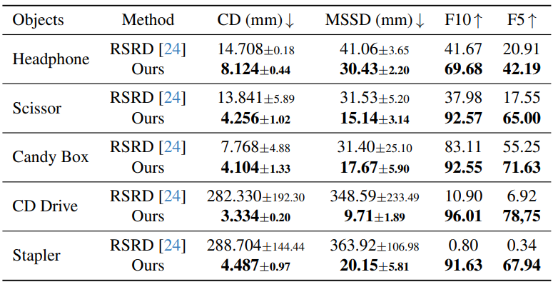
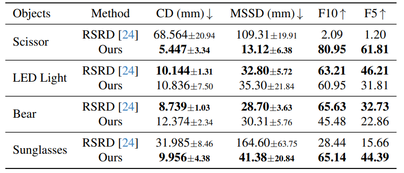

ArtHOI-RGBD: Scissors
CVPR 2026 Submission
ArtHOI: Taming Foundation Models for Monocular 4D Reconstruction of Hand-Articulated-Object Interactions
1Harbin Institute of Technology 2Shanghai Jiao Tong University
Abstract
Existing hand-object interaction methods are largely limited to rigid objects, while articulated-object 4D reconstruction often requires pre-scanning or multi-view videos. ArtHOI addresses this gap with an optimization-based framework that integrates and refines priors from multiple foundation models. We propose Adaptive Sampling Refinement (ASR) to estimate metric object scale and pose from normalized image-to-3D outputs, and an MLLM-guided hand-object alignment strategy that uses contact reasoning as optimization constraints. We also introduce ArtHOI-RGBD and ArtHOI-Wild for evaluation on both controlled and in-the-wild articulated interactions.
Method Overview
ArtHOI reconstructs 4D hand-articulated-object interactions from a single monocular video, with no pre-scanned object or multi-view setup. It coordinates priors from multiple foundation models while resolving their two key failure modes: (1) prior misalignment, especially in metric scale and geometry, and (2) hand-object misalignment that violates physical contact.

Pipeline of ArtHOI — an optimization-based framework (a) that integrates and refines priors from multiple foundation models. The proposed ASR method (b) recovers metric-scale 3D mesh in world space from a normalized one; MLLM-guided hand-object alignment (c) promotes physically plausible HOI mesh composition.
①
Foundation Model Preprocessing
SAM2 segments the object and hand; Video-Depth-Anything estimates metric depth and camera intrinsics. DiffuEraser inpaints the human region to isolate the object. HunYuan3D then reconstructs the object's 3D mesh from the clean canonical frame.
②
ASR: Metric Scale & Pose Estimation
Image-to-3D models output normalized meshes with no real-world scale. Adaptive Sampling Refinement (ASR) iteratively samples candidate scales, queries FoundationPose for a pose at each scale, and scores hypotheses by silhouette matching against the object mask. This robustly grounds the mesh in metric world space.
③
Part-wise Motion Reconstruction
PartField partitions the canonical mesh into parts; CoTracker3 tracks them across the inpainted video and lifts tracks to 3D via depth. Per-part SE(3) motions are optimized with a visibility-aware tracking loss and a temporal smoothness term. This handles part-part and hand-part occlusions that defeat texture-matching baselines.
④
MLLM-Guided Hand-Object Alignment
Independently reconstructed hands (WiLoR) and objects misalign in scale and position. An MLLM (Qwen-VL) is prompted with camera-perspective cues, neighboring frames, and colorized depth to infer per-frame contact states and contacting fingers. These labels drive a two-stage optimization that aligns object scale to the hand, then refines hand pose to achieve physically plausible contact.
Results Gallery
Reconstructed 4D hand-articulated-object interactions across ArtHOI-RGBD, RSRD, and ArtHOI-Wild sources.

Qualitative results across three data sources. The first column shows sampled input frames; camera-view and side-view HOI meshes are shown per result. Hand reconstructions for RSRD use the same WiLoR model for fair comparison. RSRD cannot process ArtHOI-Wild videos, as it requires an object scan unavailable for internet footage.
ArtHOI-RGBD: Stapler
RSRD: CD Drive
ArtHOI-Wild: Headphones
Quantitative Results
We evaluate ArtHOI on three aspects: articulated object reconstruction accuracy, hand-object alignment quality, and MLLM contact reasoning accuracy.




Citation
If you find ArtHOI useful for your research, please consider citing our paper:
TBD